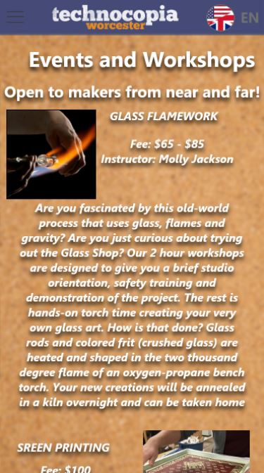
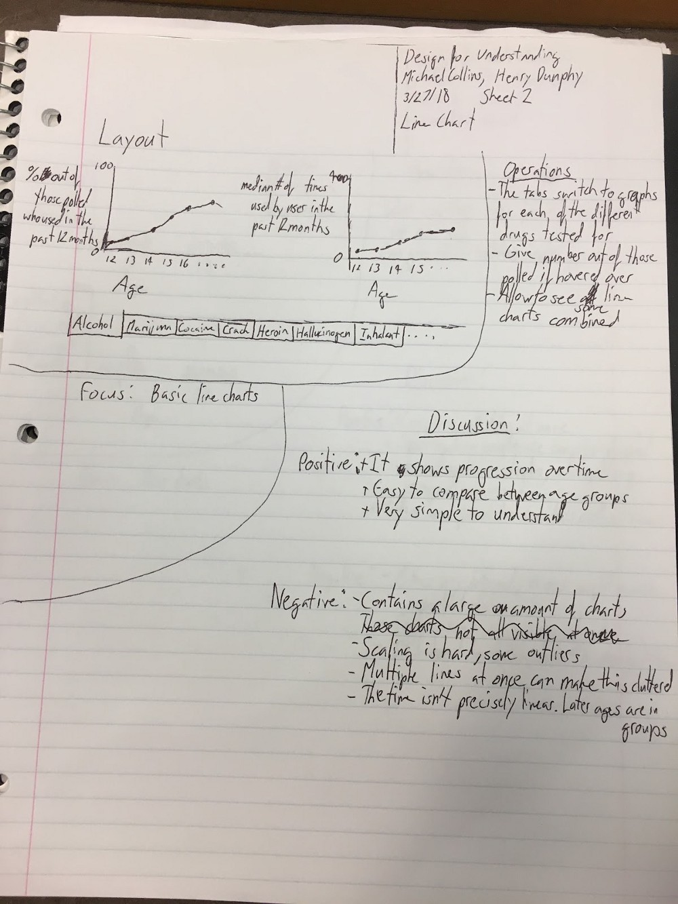
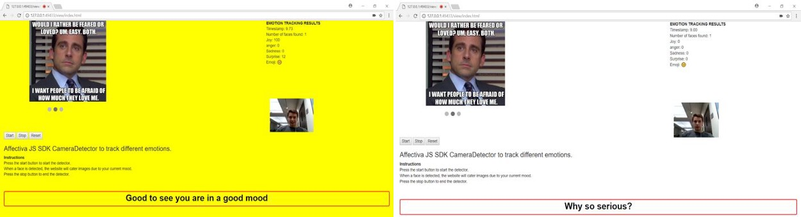

__________________________________________________________________________________________________________________________________
In my time working on projects for CS3041 I came to the understanding that preparation is everything. The more time you spend preparing to implement a project the better it turns out. For me personally I found the result of rapid prototyping on paper was the most effective way to understand which design best fit the requirements. I found user testing to be helpful in most of the projects. However, many of my projects did not always turn out the way I envisioned, mostly due to time and technological limitations. This class has taught me a lot in human computer interaction and the design process which I will continue to use in my professional career.
Before taking CS3041 I always enjoyed working on user interface and design, but I had never seen it as a science. I would start the project and changed things as I went along to make it look good and work smoothly to me. From week one of this class I realized that I was wrong about my approach to user interface and human computer interaction. I used to think that design was just something that looked aesthetically pleasing, but this class has shown me that design is the combination of functionality with how it looks. A design can lead too far to one of these sides and it becomes bad design.
In our first group project, Design for Others, our page looked good and our classmates were able to recognize the intentions of the design. The problem was, in our demo we only included screenshots that could not be manipulated easily and that threw off most of our testers. They did not like that they were unable to scroll when they could see we had written more information below.
This is the image our peers wanted to scroll
It seems that it should go without saying, but the preparation leading up to implementation of a design is critical to the success of a project. I found that rapid prototyping using the “Five sheet design” method (http://fds.design/) led to my most successful projects. This can clearly seen in the project, Design for Understanding. My group compared different graphs and while at first I thought a radial plot would have been the best way to communicate our data. After going through the five sheet design we saw that the line chart would be the best way to display our data in a way that was understandable. Here is our line chart sheet:
Line chart design sheet
User feedback is extremely useful to a designer as it gives them insight to what their end users are looking for. When looking for feedback you want people who see things differently than you and you want a large sample size. Our class is a group of 60 or so and all of us are CS majors that made it difficult to get feedback especially when our end users were not college CS majors. However, in Design for Wellbeing, my group received a lot of useful feedback. From this feedback we changed the background color to be less blinding, as well as implemented a wider variety of funny material.
Before User Testing
After User Testing
In Design for Tension, my group interviewed friends to help us find human answers for our chat-bot to use. The goal of that project was to make our robot seem human and our project relied upon the user testing results. We used the Wizard of Oz strategy which is where we pretended to be our chat-bot and responded to our testers. This method of user testing allowed us to achieve our goal of a human sounding chat bot. A more in-depth description of Wizard of Oz usability testing can be found here. The testing also gave us much more information, for example not many users understood what an AI singularity was. With their feedback, one of the first responses was the definition of an AI singularity. Design for Tension is heavily interactive with the users and therefore user testing was necessary even for a small one week project. In future projects that rely on how the user interacts and responds to my software user testing will be paramount.
One must also keep in mind, that it is a lot harder to go from designing to implementing. Often when designing prototypes the designer is unaware of limitations. The two biggest factors that altered our designs during implementation were the technology and the amount of time we had. Each project lasted about a week and sometimes the design choices were too ambitious for such a project. For example in Design for World, we wanted to make a virtual carnival with two to three games available for people to play. It turned out to be a lot more difficult than we anticipated and we ended up with only one simple game. If we had more time, maybe we would have been able to finish our original design.
Virtual Reality Carnival World Demo
The design process is critical to completing a project that meets all of the goals and requirements set out for it. The brainstorming and prototyping may seem like tedious work at first, but it saves a lot of work in the end. The design process allows your team to have a clear vision of what you want to accomplish and how to attain that vision.